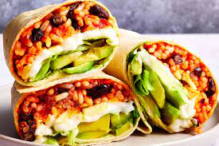

Vegetarian Bean and Rice Burrito!

Recipe to make Vegetarian Bean and Rice Burrito
Quick and easy, vegan bean and rice burritos are a perfect vegetarian dinner idea. This basic recipe includes plenty of Mexican spices, is a great way to use up leftover rice, and can be customized to whatever you have on hand.
The secret to this delicious burrito is cilantro-lime rice. Many restaurants rely on it for vegetarian burritos as well, and it's as simple as mixing chopped cilantro and lime juice into cooked rice. You'll gently heat the rice then wrap it into a burrito with sautéed onion, garlic, black or pinto beans, hot sauce, and a few spices. Add extra toppings such as non-dairy sour cream, homemade guacamole, salsa, and black olives if you like.
These burritos are so filling that they're almost a complete and balanced meal on their own. If you'd like a side dish, consider elote (Mexican street corn), refried bean taquitos, or simply slice up an avocado and serve it on top of any fillings that didn't fit in the tortillas.
Ingredients
- 2 cups cooked rice
- 2 tablespoons fresh cilantro, chopped
- 2 limes, juiced
- 1/2 medium onion, diced
- 3 to 4 cloves garlic, minced
- 2 tablespoons vegetable oil (or olive oil)
- 1 (15-ounce) can black beans (or pinto beans), drained
- 1 tablespoon chili powder
- 1/2 teaspoon ground cumin
- 1 tablespoon hot sauce, or to taste
- Pinch salt, to taste, optional
- 4 (10-inch) large tortillas
Steps
- Gather the ingredients.
- In a large microwave-safe bowl, toss together cooked rice and fresh chopped cilantro, and drizzle with the lime juice. Heat in the microwave or on the stove just until hot, and give it a quick stir.
- In a separate large skillet, sauté the onion in vegetable oil or olive oil for 5 minutes, or until the onion is soft. Add the garlic and cook another minute.
- Reduce the heat to medium-low, add the black beans or pinto beans, and season with the chili powder, cumin, and hot sauce, stirring to combine. You can add a bit of salt if you'd like, but you shouldn't need too much with all the other seasonings. Allow the beans to cook until heated through, about 5 minutes.
- Spoon the cilantro-lime rice and the black bean mixture onto lightly warmed flour tortillas, and add any additional toppings you want.
- Wrap the burritos: Fold the short ends in, then fold one long side over the filling and gently push to ensure the fold is tight before rolling up the remainder of the burrito.